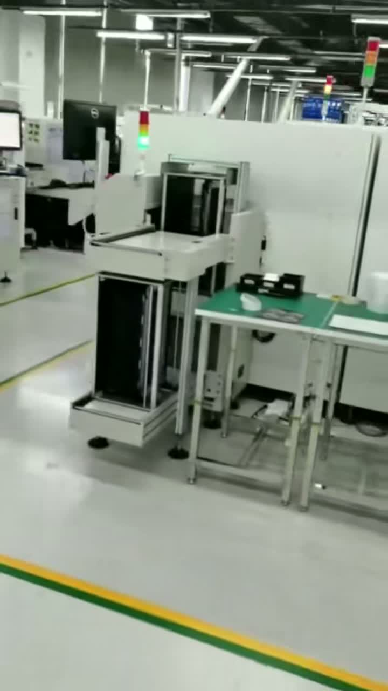

01
Magazine alignment
Pneumatic locating and clamping help position a compatible magazine before the board is transferred.
SMT / THT board handling
Automate magazine-to-line PCB feeding with a configuration that is reviewed around the magazine, the board and the downstream interface.
For 535 × 460 × 569 mm magazines: SLD390 is the starting configuration. Final suitability depends on the magazine's base locators, clamping faces and actual overall height.
What it does
A PCB Magazine Loader sits at the start of an SMT, THT or mixed-assembly line. It aligns the magazine, indexes the required slot and transfers one PCB to the downstream conveyor. The product family is selected by the magazine footprint and PCB working envelope, then reviewed against the real production line.
Core advantages
Feature availability can vary by final model and project configuration. The selection below describes the standard magazine-loader approach, not a blanket promise for every custom line.
Pneumatic locating and clamping help position a compatible magazine before the board is transferred.
Reference pitch selections are 10, 20, 30 and 40 mm; the correct option follows the actual magazine and PCB requirement.
A regulated pusher and supported conveyor path move the PCB from magazine to the downstream machine.
Specify transfer direction, working height and SMEMA interface when reviewing printer, mounter, inserter or conveyor connection.
Load the compatible PCB magazine onto the machine platform.
Confirm the locating and clamping surfaces seat correctly.
Select the required slot pitch and board-transfer sequence.
Feed one PCB to the next machine through the defined line interface.

Before quotation
A 535 × 460 × 569 mm magazine is close to the SLD390 reference footprint. However, the height difference between published magazine references and an existing customer magazine must be checked with the actual item rather than assumed from a dimension line alone.
Magazine front, side and bottom photos or a drawing; outside L × W × H; base locators and feet; side-clamping faces; PCB maximum size and thickness; slot pitch; transfer direction; and working height. Packaging dimensions, gross weight and production lead time are confirmed only in the written quotation.
SLD390 reference configuration
These are reference specifications from the standard loader material. They are not a substitute for a project-specific confirmation drawing or freight quotation.
| Equipment type | Standard single-lane PCB Magazine Loader |
|---|---|
| Reference model | SLD390 |
| Reference machine outline | 1800 × 909 × 1250 mm (L × W × H) |
| Reference machine net weight | 240 kg |
| Reference PCB size | 50 × 50 to 530 × 390 mm |
| Reference magazine footprint | 535 × 460 mm (L × W) |
| Reference services | 220 V and 0.4–0.6 MPa air supply; final electrical specification to be confirmed |
| Reference interface | SMEMA-compatible configuration |
Magazine height is deliberately not stated as a guaranteed value here. Published material contains different nominal heights across related rack and loader references; evaluate the supplied magazine's true height and locating structure before confirming compatibility.
Model selection guide
The SLD390 is the 390-width reference. Other widths are available when the magazine or PCB envelope changes.
| Reference model | Reference PCB size (mm) | Reference magazine footprint (mm) | Machine outline L × W × H (mm) | Reference net weight |
|---|---|---|---|---|
| SLD250 | 50 × 50 – 330 × 250 | 355 × 320 | 1330 × 765 × 1250 | 140 kg |
| SLD330 | 50 × 50 – 445 × 330 | 460 × 400 | 1650 × 845 × 1250 | 200 kg |
| SLD390 | 50 × 50 – 530 × 390 | 535 × 460 | 1800 × 909 × 1250 | 240 kg |
| SLD460 | 50 × 50 – 530 × 460 | 535 × 530 | 1800 × 970 × 1250 | 300 kg |
Reference dimensions are intended for model screening. Magazine construction, nominal height, PCB edge support and the required line handoff determine the final configuration.
FAQ
SLD390 is the appropriate reference configuration based on the 535 × 460 mm footprint. Final confirmation requires the actual magazine's base, locating points, side-clamping surfaces and total height. A small nominal height difference can matter if it affects seating or lift clearance.
No. Rack or magazine size describes the PCB magazine. The machine outline is a separate dimension and is larger because it includes the lifting, loading and conveyor structure.
The machine reference net weight is useful for early planning, but freight needs the crated packing size and gross weight. These values depend on the final configuration and must be confirmed in the formal quotation.
A loader feeds boards into the line; an unloader receives boards at the line end. They are separate machines and can be configured as a pair when the line layout requires it.
Request a line review
We will review the physical magazine interface, PCB envelope, line direction and utilities, then confirm the equipment model, price, packing information and lead time.